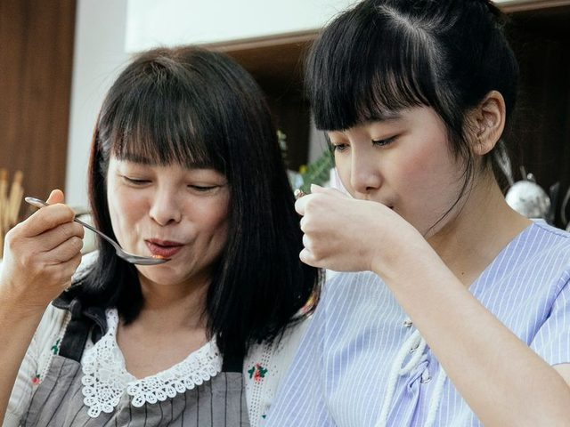

UNIT 35 · VOCABULARY
其他動詞 (1)
Other verbs (1)
33 個單字聽・唸・用
本單元單字一覽
感官動詞（看、聽、聞、嚐）和表示想法、感覺的動詞，共 33 個。重點：感官動詞＋形容詞、後面接 to V 還是 V-ing。
feelhearlistenlookseesmellsoundtastewatchcheckendfinishbelieveforgetguesshatehopeknowlikelovemindneednoticeremembersurprisethinkwantwishworryactblowbowbreak
每個字都有 🔊，先聽發音、跟著唸，再看例句。
單字 1–4
🤗
feel
感覺；摸起來v.
I feel much better after a rest.
休息之後我覺得好多了。
休息之後我覺得好多了。
👂
hear
聽到v.
I heard someone knocking at the door.
我聽見有人在敲門。
我聽見有人在敲門。

listen
聽v.
I like to listen to music.
我喜歡聽音樂。
我喜歡聽音樂。
👀
look
看；看起來v.
Look at the beautiful flowers!
看那些漂亮的花！
看那些漂亮的花！
單字 5–8
👁️
see
看見v.
I saw many birds at the zoo.
我在動物園看到很多鳥。
我在動物園看到很多鳥。

smell
聞；聞起來v.
The soup smells good.
這湯聞起來很香。
這湯聞起來很香。
🔉
sound
聽起來v.
Your idea sounds great.
你的主意聽起來很棒。
你的主意聽起來很棒。

taste
嚐；嚐起來v.
This cake tastes sweet.
這蛋糕嚐起來很甜。
這蛋糕嚐起來很甜。
單字 9–12

watch
看；觀看v.
We watched a baseball game last night.
我們昨晚看了一場棒球賽。
我們昨晚看了一場棒球賽。
✅
check
檢查v.
Check your bag before you leave.
離開前檢查一下你的包包。
離開前檢查一下你的包包。
🔚
end
結束v.
What time does the party end?
派對幾點結束？
派對幾點結束？
🏁
finish
完成v.
I finished doing my homework.
我寫完功課了。
我寫完功課了。
單字 13–16
🙌
believe
相信v.
I can't believe it!
我不敢相信！
我不敢相信！
🤦
forget
忘記v.
Don't forget to bring your umbrella.
別忘了帶雨傘。
別忘了帶雨傘。
🤔
guess
猜v.
Guess what I have in my hand.
猜猜看我手上有什麼。
猜猜看我手上有什麼。
😖
hate
討厭v.
I hate getting up early in winter.
我討厭冬天早起。
我討厭冬天早起。
單字 17–20
🌈
hope
希望v.
I hope to see you again.
我希望能再見到你。
我希望能再見到你。
💡
know
知道；認識v.
I have known Amy for five years.
我認識 Amy 五年了。
我認識 Amy 五年了。
👍
like
喜歡v.
I like playing basketball.
我喜歡打籃球。
我喜歡打籃球。
❤️
love
愛；喜愛v.
My sister loves traveling.
我姊姊很愛旅行。
我姊姊很愛旅行。
單字 21–24
🙇
mind
介意v.
Would you mind opening the window?
你介意打開窗戶嗎？
你介意打開窗戶嗎？
🆘
need
需要v.
Do you need any help?
你需要幫忙嗎？
你需要幫忙嗎？
👀
notice
注意到v.
Did you notice the new sign?
你有注意到新的告示牌嗎？
你有注意到新的告示牌嗎？
🧠
remember
記得v.
Remember to turn off the lights.
記得關燈。
記得關燈。
單字 25–28
😲
surprise
使驚訝v.
The news surprised everyone.
這則消息讓大家很驚訝。
這則消息讓大家很驚訝。
💭
think
想；認為v.
I think it will rain today.
我想今天會下雨。
我想今天會下雨。
🙋
want
想要v.
What do you want to be in the future?
你將來想做什麼？
你將來想做什麼？
🌠
wish
希望；祝福v.
I wish you a happy birthday.
祝你生日快樂。
祝你生日快樂。
單字 29–32
😟
worry
擔心v.
Don't worry about me.
不要擔心我。
不要擔心我。
🎭
act
行動；演戲v.
We must act quickly.
我們必須快點行動。
我們必須快點行動。
🌬️
blow
吹v.
Blow out the candles!
吹熄蠟燭！
吹熄蠟燭！
🙇
bow
鞠躬v.
The singer bowed to the audience.
歌手向觀眾鞠躬。
歌手向觀眾鞠躬。
單字 33–33
💔
break
打破；弄壞v.
Who broke the window?
誰打破了窗戶？
誰打破了窗戶？
感官動詞＋形容詞
| 動詞 | 意思 | 例句 |
|---|---|---|
| look | 看起來 | You look tired. |
| sound | 聽起來 | That sounds great. |
| smell | 聞起來 | The soup smells good. |
| taste | 嚐起來 | The cake tastes sweet. |
| feel | 感覺；摸起來 | I feel happy. |
後面接形容詞，不接副詞：It tastes good.（不是 well）；接名詞要加 like：She looks like her mother.
看和聽
| 動詞 | 意思 |
|---|---|
| look at | 注意看（靜態） |
| watch | 觀看（動態：電視、比賽） |
| see | 看見（自然看到） |
| listen to | 注意聽 |
| hear | 聽見（自然聽到） |
後面接 to V 還是 V-ing
| 接法 | 動詞 | 例句 |
|---|---|---|
| V-ing | finish、mind | I finished reading the book. |
| to V | want、hope、need | I want to go home. |
| 兩種都可以 | like、love、hate | I like swimming. ＝ I like to swim. |
| 意思不同 | forget／remember | forget to V 忘了要做；forget V-ing 忘了做過 |
快問快答：中文 → 英文
1感覺；摸起來feel
2聽listen
3看見see
4聽起來sound
5看；觀看watch
6結束end
7相信believe
8猜guess
快問快答：英文 → 中文
1hope希望
2like喜歡
3mind介意
4notice注意到
5surprise使驚訝
6want想要
7worry擔心
8blow吹
學完了！接下來
複習方法
review
- 回到「📗 單字卡」，按「遮中文」自己考自己
- 再按「遮英文」，看中文說出英文
- 每個例句跟著 🔊 唸一次
準備好了
- 按右上角「📝 前往測驗」
- 測驗錯的題目要訂正到全對
- 訂正完成補送 1 點